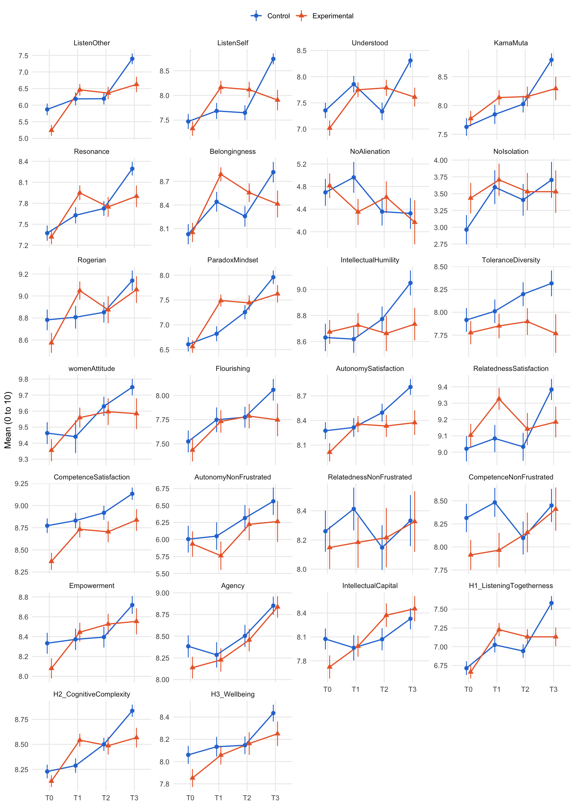
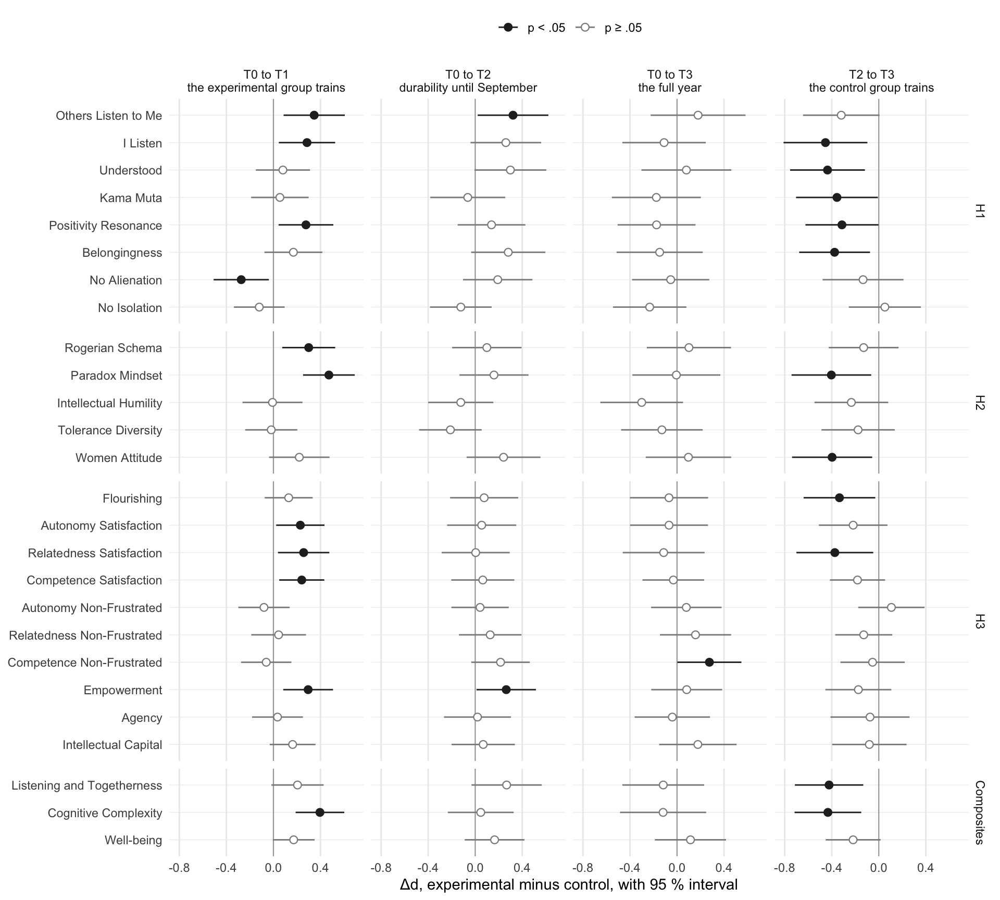

source("R/packages.R") # all packages (Chapter 1)
source("R/settings.R") # waves, conditions, folders (Chapter 1)
df <- readRDS("cache/df.rds") # one row per questionnaire (Chapter 2)
df_wide <- readRDS("cache/df_wide.rds") # one row per person (Chapter 2)
item_names <- names(select(df, ListenOther1:CompetenceNonFrustrated4))
source("R/scales.R") # the 23 scales (Chapter 2)9. Means and Δd
NoteAbout this chapter
Describes the scale scores by condition and wave and measures the change of each group in standard deviations (repeated-measures d). The difference between the groups, Δd, is the descriptive counterpart of the difference-in-differences: while the experimental group trains (T0 to T1) and while the control group trains (T2 to T3). The Δd are shown with their intervals, recomputed with the standard deviation of all questionnaires before the window, and corrected for testing 23 scales; a dropout analysis asks whether the later gains come from who stays in the study. Feeds the table and figures of means and effect sizes of the Results; Chapter 14 repeats the Δd on the sample sets S0 to S9.
9.1 Means by condition and wave
Where does each group stand? The 23 scale scores and the three hypothesis composites (Chapter 2), as M (SD), by condition and wave:
composites <- c("H1_ListeningTogetherness", "H2_CognitiveComplexity",
"H3_Wellbeing")
outcomes <- c(scales$scale, composites)
means_by_cell <- df |>
pivot_longer(all_of(outcomes), names_to = "outcome", values_to = "value") |>
summarise(M = mean(value, na.rm = TRUE),
SD = sd(value, na.rm = TRUE),
n = sum(!is.na(value)),
.by = c(outcome, condition, Occasion))
means_by_cell |>
mutate(M_SD = sprintf("%.2f (%.2f)", M, SD),
outcome = factor(outcome, levels = outcomes)) |>
select(outcome, condition, Occasion, M_SD) |>
arrange(condition, Occasion) |>
pivot_wider(names_from = c(condition, Occasion), values_from = M_SD) |>
arrange(outcome)| outcome | Control_T0 | Control_T1 | Control_T2 | Control_T3 | Experimental_T0 | Experimental_T1 | Experimental_T2 | Experimental_T3 |
|---|---|---|---|---|---|---|---|---|
| ListenOther | 5.87 (2.35) | 6.19 (2.35) | 6.19 (2.20) | 7.40 (1.93) | 5.24 (2.21) | 6.46 (2.20) | 6.36 (1.90) | 6.62 (1.93) |
| ListenSelf | 7.47 (2.03) | 7.68 (1.96) | 7.65 (1.95) | 8.74 (1.34) | 7.33 (1.96) | 8.16 (1.67) | 8.12 (1.63) | 7.91 (1.72) |
| Understood | 7.35 (1.96) | 7.86 (1.93) | 7.34 (2.13) | 8.31 (1.62) | 7.02 (1.96) | 7.75 (1.77) | 7.79 (1.58) | 7.61 (1.51) |
| KamaMuta | 7.63 (2.05) | 7.85 (2.01) | 8.02 (1.86) | 8.79 (1.33) | 7.77 (1.80) | 8.14 (1.61) | 8.16 (1.74) | 8.29 (1.68) |
| Resonance | 7.37 (1.44) | 7.63 (1.41) | 7.73 (1.35) | 8.29 (1.15) | 7.32 (1.43) | 7.95 (1.32) | 7.75 (1.44) | 7.90 (1.28) |
| Belongingness | 8.03 (1.72) | 8.44 (1.52) | 8.26 (1.68) | 8.82 (1.55) | 8.05 (1.63) | 8.79 (1.11) | 8.56 (1.20) | 8.41 (1.42) |
| NoAlienation | 4.70 (3.18) | 4.96 (3.30) | 4.36 (3.17) | 4.32 (3.25) | 4.81 (2.94) | 4.35 (2.89) | 4.61 (2.84) | 4.17 (3.24) |
| NoIsolation | 2.96 (2.90) | 3.60 (3.04) | 3.41 (3.05) | 3.70 (3.20) | 3.43 (3.05) | 3.71 (3.01) | 3.53 (2.83) | 3.53 (2.63) |
| Rogerian | 8.78 (1.25) | 8.81 (1.25) | 8.85 (1.20) | 9.14 (1.09) | 8.57 (1.22) | 9.05 (1.03) | 8.87 (1.24) | 9.06 (1.00) |
| ParadoxMindset | 6.61 (1.95) | 6.82 (1.82) | 7.25 (1.86) | 7.96 (1.63) | 6.56 (1.70) | 7.49 (1.52) | 7.44 (1.56) | 7.62 (1.47) |
| IntellectualHumility | 8.63 (1.40) | 8.62 (1.27) | 8.77 (1.25) | 9.05 (1.14) | 8.67 (1.23) | 8.73 (1.15) | 8.66 (1.37) | 8.73 (1.04) |
| ToleranceDiversity | 7.92 (1.73) | 8.01 (1.56) | 8.20 (1.69) | 8.32 (1.68) | 7.78 (1.70) | 7.85 (1.69) | 7.90 (1.48) | 7.77 (1.75) |
| womenAttitude | 9.46 (0.90) | 9.44 (1.23) | 9.63 (0.77) | 9.75 (0.61) | 9.36 (0.93) | 9.56 (0.78) | 9.60 (0.84) | 9.58 (0.80) |
| Flourishing | 7.52 (1.51) | 7.75 (1.55) | 7.78 (1.40) | 8.06 (1.33) | 7.43 (1.57) | 7.73 (1.46) | 7.79 (1.29) | 7.75 (1.41) |
| AutonomySatisfaction | 8.27 (1.37) | 8.32 (1.39) | 8.49 (1.41) | 8.81 (1.16) | 8.01 (1.50) | 8.36 (1.23) | 8.33 (1.36) | 8.37 (1.25) |
| RelatednessSatisfaction | 9.02 (1.03) | 9.08 (1.00) | 9.03 (1.10) | 9.38 (0.76) | 9.10 (0.93) | 9.33 (0.84) | 9.14 (1.00) | 9.18 (0.78) |
| CompetenceSatisfaction | 8.77 (1.10) | 8.83 (1.05) | 8.92 (1.02) | 9.13 (0.83) | 8.37 (1.30) | 8.73 (1.16) | 8.70 (1.19) | 8.84 (1.02) |
| AutonomyNonFrustrated | 6.01 (2.63) | 6.05 (2.44) | 6.32 (2.46) | 6.56 (2.40) | 5.93 (2.52) | 5.76 (2.62) | 6.22 (2.39) | 6.26 (2.51) |
| RelatednessNonFrustrated | 8.26 (1.88) | 8.41 (1.77) | 8.15 (1.98) | 8.33 (2.09) | 8.15 (1.96) | 8.18 (2.18) | 8.22 (2.07) | 8.33 (1.73) |
| CompetenceNonFrustrated | 8.31 (2.05) | 8.48 (1.90) | 8.10 (2.31) | 8.45 (2.14) | 7.91 (2.19) | 7.97 (2.34) | 8.16 (2.19) | 8.41 (1.95) |
| Empowerment | 8.33 (1.40) | 8.37 (1.30) | 8.40 (1.36) | 8.72 (1.07) | 8.08 (1.36) | 8.44 (1.17) | 8.53 (1.05) | 8.55 (1.09) |
| Agency | 8.38 (1.68) | 8.29 (1.76) | 8.50 (1.64) | 8.85 (1.23) | 8.14 (1.67) | 8.23 (1.68) | 8.46 (1.32) | 8.84 (1.03) |
| IntellectualCapital | 8.07 (1.75) | 7.96 (1.92) | 8.07 (1.78) | 8.33 (1.59) | 7.72 (1.94) | 7.98 (1.64) | 8.37 (1.50) | 8.45 (1.32) |
| H1_ListeningTogetherness | 6.71 (1.23) | 7.02 (1.23) | 6.94 (1.17) | 7.58 (1.10) | 6.66 (1.16) | 7.23 (1.11) | 7.13 (1.04) | 7.13 (1.03) |
| H2_CognitiveComplexity | 8.23 (0.91) | 8.29 (0.87) | 8.50 (0.86) | 8.84 (0.73) | 8.13 (0.80) | 8.54 (0.80) | 8.49 (0.89) | 8.57 (0.81) |
| H3_Wellbeing | 8.06 (1.08) | 8.13 (1.07) | 8.15 (1.02) | 8.44 (0.91) | 7.85 (1.09) | 8.06 (1.05) | 8.16 (1.03) | 8.25 (0.92) |
How do the means move? Each panel has its own scale; the bars span one standard error of the mean (SD / √n) on either side:
dodge <- position_dodge(width = .3) # the two groups side by side
means_by_cell |>
mutate(outcome = factor(outcome, levels = outcomes),
se = SD / sqrt(n)) |>
ggplot(aes(x = Occasion, y = M, colour = condition, shape = condition,
group = condition)) +
geom_linerange(aes(ymin = M - se, ymax = M + se), linewidth = .5,
position = dodge) +
geom_line(linewidth = .7, position = dodge) +
geom_point(size = 2.2, position = dodge) +
facet_wrap(~ outcome, ncol = 4, scales = "free_y") +
scale_colour_manual(values = c(Control = "#2a78d6",
Experimental = "#eb6834")) +
labs(x = NULL, y = "Mean (0 to 10)", colour = NULL, shape = NULL) +
theme_minimal(base_size = 11) +
theme(legend.position = "top", panel.grid.minor = element_blank())
9.2 Repeated-measures d
How large is the change of each group? For each group and window, d is the mean change divided by the standard deviation before the window (Morris & DeShon, 2002); Δd is the d of the experimental group minus the d of the control group, tested with a z-test. Change, standard deviation and standard error all rest on the persons who answered at both waves of the window.
# Repeated-measures effect sizes (Chapters 9 and 14)
#
# d_rm(): the change of one group in one window, in standard deviations
# before the window (Morris & DeShon, 2002). Change, SD and standard error
# all come from the persons who answered at both waves.
# delta_d(): the difference experimental minus control, with a z-test.
# With sd_pre = "all", d is divided by the SD of every questionnaire of the
# group at the first wave, not only of the pairs; the standard error stays
# that of the pairs.
d_rm <- \(data, outcome, pre, post, group, sd_pre = "pairs") {
waves <- data |>
filter(condition == group, Occasion %in% c(pre, post)) |>
select(id, Occasion, value = all_of(outcome))
pairs <- waves |>
pivot_wider(names_from = Occasion, values_from = value) |>
drop_na()
change <- mean(pairs[[post]] - pairs[[pre]])
d <- change / sd(pairs[[pre]])
r <- cor(pairs[[pre]], pairs[[post]])
n <- nrow(pairs)
se <- sqrt(2 * (1 - r) / n + d^2 / (2 * n))
sd_all <- sd(waves$value[waves$Occasion == pre], na.rm = TRUE)
tibble(d = if (sd_pre == "all") change / sd_all else d, se = se, n = n)
}
delta_d <- \(data, pre, post, outcomes, sd_pre = "pairs") {
map(outcomes, \(outcome) {
eg <- d_rm(data, outcome, pre, post, "Experimental", sd_pre)
cg <- d_rm(data, outcome, pre, post, "Control", sd_pre)
tibble(outcome = outcome,
d_EG = eg$d, n_EG = eg$n, d_CG = cg$d, n_CG = cg$n,
delta_d = eg$d - cg$d, se = sqrt(eg$se^2 + cg$se^2))
}) |>
list_rbind() |>
mutate(z = delta_d / se, p = 2 * pnorm(-abs(z)))
}Four windows: while the experimental group trains (T0 to T1), its durability (T0 to T2, T0 to T3), and while the control group trains (T2 to T3), where a negative Δd means the control group gains more.
effect_windows <- tribble(
~pre, ~post, ~window,
"T0", "T1", "T0 to T1: the experimental group trains",
"T0", "T2", "T0 to T2: durability until September",
"T0", "T3", "T0 to T3: the full year",
"T2", "T3", "T2 to T3: the control group trains"
)
effects <- effect_windows |>
mutate(table = map2(pre, post, \(a, b) delta_d(df, a, b, outcomes))) |>
unnest(table)How many persons does each window rest on?
effects |>
filter(outcome == "H1_ListeningTogetherness") |>
select(window, n_EG, n_CG)| window | n_EG | n_CG |
|---|---|---|
| T0 to T1: the experimental group trains | 148 | 134 |
| T0 to T2: durability until September | 91 | 107 |
| T0 to T3: the full year | 66 | 97 |
| T2 to T3: the control group trains | 51 | 125 |
The experimental group’s pairs shrink from 148 (T0 to T1) to 66 (T0 to T3), so the later windows describe ever more selected persons. The multilevel models of Chapter 10 use all questionnaires; Section 9.6 asks whether the selection explains the later gains.
T0 to T1: the experimental group trains
show_window <- \(from, to) {
effects |>
filter(pre == from, post == to) |>
select(outcome, d_EG, d_CG, delta_d, se, p, n_EG, n_CG) |>
mutate(across(c(d_EG, d_CG, delta_d, se), \(x) round(x, 2)),
p = round(p, 3))
}
show_window("T0", "T1")| outcome | d_EG | d_CG | delta_d | se | p | n_EG | n_CG |
|---|---|---|---|---|---|---|---|
| ListenOther | 0.54 | 0.19 | 0.35 | 0.13 | 0.009 | 148 | 134 |
| ListenSelf | 0.47 | 0.19 | 0.29 | 0.12 | 0.020 | 148 | 134 |
| Understood | 0.31 | 0.23 | 0.08 | 0.12 | 0.493 | 148 | 134 |
| KamaMuta | 0.22 | 0.16 | 0.05 | 0.12 | 0.659 | 148 | 134 |
| Resonance | 0.44 | 0.16 | 0.28 | 0.12 | 0.020 | 148 | 132 |
| Belongingness | 0.43 | 0.26 | 0.17 | 0.13 | 0.177 | 148 | 134 |
| NoAlienation | -0.19 | 0.09 | -0.27 | 0.12 | 0.022 | 148 | 134 |
| NoIsolation | 0.05 | 0.17 | -0.12 | 0.11 | 0.275 | 148 | 133 |
| Rogerian | 0.39 | 0.09 | 0.30 | 0.11 | 0.009 | 148 | 134 |
| ParadoxMindset | 0.55 | 0.07 | 0.47 | 0.11 | 0.000 | 148 | 134 |
| IntellectualHumility | -0.02 | -0.01 | -0.01 | 0.13 | 0.952 | 148 | 132 |
| ToleranceDiversity | 0.04 | 0.06 | -0.02 | 0.11 | 0.869 | 147 | 134 |
| womenAttitude | 0.21 | -0.01 | 0.22 | 0.13 | 0.094 | 148 | 132 |
| Flourishing | 0.18 | 0.05 | 0.13 | 0.10 | 0.212 | 148 | 134 |
| AutonomySatisfaction | 0.21 | -0.02 | 0.23 | 0.10 | 0.029 | 148 | 134 |
| RelatednessSatisfaction | 0.18 | -0.07 | 0.26 | 0.11 | 0.021 | 148 | 134 |
| CompetenceSatisfaction | 0.27 | 0.03 | 0.24 | 0.10 | 0.014 | 148 | 133 |
| AutonomyNonFrustrated | -0.10 | -0.02 | -0.08 | 0.11 | 0.471 | 148 | 133 |
| RelatednessNonFrustrated | 0.00 | -0.05 | 0.04 | 0.12 | 0.710 | 148 | 133 |
| CompetenceNonFrustrated | 0.00 | 0.07 | -0.06 | 0.11 | 0.574 | 148 | 133 |
| Empowerment | 0.27 | -0.02 | 0.30 | 0.11 | 0.006 | 147 | 134 |
| Agency | 0.02 | -0.01 | 0.03 | 0.11 | 0.754 | 147 | 133 |
| IntellectualCapital | 0.12 | -0.04 | 0.16 | 0.10 | 0.100 | 147 | 134 |
| H1_ListeningTogetherness | 0.47 | 0.26 | 0.20 | 0.11 | 0.070 | 148 | 134 |
| H2_CognitiveComplexity | 0.47 | 0.08 | 0.40 | 0.11 | 0.000 | 148 | 134 |
| H3_Wellbeing | 0.16 | -0.01 | 0.17 | 0.09 | 0.057 | 148 | 134 |
9 of the 23 scales show a significant Δd in favour of the experimental group, led by Paradox Mindset, Others Listen to Me, and Rogerian Schema (Δd = 0.47, 0.35, 0.30). No Alienation moves against the training (Δd = -0.27).
T0 to T2: durability until September
show_window("T0", "T2")| outcome | d_EG | d_CG | delta_d | se | p | n_EG | n_CG |
|---|---|---|---|---|---|---|---|
| ListenOther | 0.46 | 0.14 | 0.32 | 0.15 | 0.036 | 91 | 105 |
| ListenSelf | 0.34 | 0.08 | 0.26 | 0.15 | 0.089 | 91 | 106 |
| Understood | 0.29 | -0.01 | 0.30 | 0.16 | 0.055 | 91 | 105 |
| KamaMuta | 0.15 | 0.21 | -0.06 | 0.16 | 0.696 | 91 | 106 |
| Resonance | 0.24 | 0.10 | 0.14 | 0.15 | 0.345 | 91 | 107 |
| Belongingness | 0.30 | 0.01 | 0.28 | 0.16 | 0.081 | 91 | 106 |
| NoAlienation | 0.00 | -0.19 | 0.19 | 0.15 | 0.203 | 91 | 107 |
| NoIsolation | -0.03 | 0.09 | -0.12 | 0.13 | 0.360 | 91 | 107 |
| Rogerian | 0.21 | 0.11 | 0.10 | 0.15 | 0.511 | 91 | 107 |
| ParadoxMindset | 0.54 | 0.38 | 0.16 | 0.15 | 0.287 | 91 | 107 |
| IntellectualHumility | -0.08 | 0.04 | -0.12 | 0.14 | 0.385 | 91 | 107 |
| ToleranceDiversity | -0.03 | 0.18 | -0.21 | 0.14 | 0.120 | 91 | 107 |
| womenAttitude | 0.32 | 0.08 | 0.24 | 0.16 | 0.133 | 91 | 107 |
| Flourishing | 0.20 | 0.13 | 0.08 | 0.15 | 0.607 | 91 | 107 |
| AutonomySatisfaction | 0.13 | 0.08 | 0.06 | 0.15 | 0.714 | 91 | 107 |
| RelatednessSatisfaction | -0.01 | -0.02 | 0.00 | 0.15 | 0.978 | 91 | 107 |
| CompetenceSatisfaction | 0.19 | 0.13 | 0.06 | 0.14 | 0.637 | 91 | 107 |
| AutonomyNonFrustrated | 0.04 | 0.00 | 0.04 | 0.12 | 0.740 | 91 | 107 |
| RelatednessNonFrustrated | 0.02 | -0.11 | 0.13 | 0.14 | 0.348 | 91 | 107 |
| CompetenceNonFrustrated | 0.06 | -0.16 | 0.22 | 0.13 | 0.089 | 91 | 107 |
| Empowerment | 0.26 | -0.01 | 0.26 | 0.13 | 0.041 | 91 | 107 |
| Agency | 0.07 | 0.05 | 0.02 | 0.15 | 0.894 | 91 | 107 |
| IntellectualCapital | 0.13 | 0.07 | 0.07 | 0.14 | 0.621 | 91 | 107 |
| H1_ListeningTogetherness | 0.35 | 0.08 | 0.27 | 0.15 | 0.080 | 91 | 107 |
| H2_CognitiveComplexity | 0.37 | 0.32 | 0.05 | 0.14 | 0.742 | 91 | 107 |
| H3_Wellbeing | 0.18 | 0.02 | 0.16 | 0.13 | 0.203 | 91 | 107 |
T0 to T3: the full year
show_window("T0", "T3")| outcome | d_EG | d_CG | delta_d | se | p | n_EG | n_CG |
|---|---|---|---|---|---|---|---|
| ListenOther | 0.84 | 0.66 | 0.18 | 0.21 | 0.384 | 66 | 97 |
| ListenSelf | 0.45 | 0.56 | -0.11 | 0.18 | 0.544 | 66 | 97 |
| Understood | 0.52 | 0.44 | 0.08 | 0.20 | 0.683 | 66 | 97 |
| KamaMuta | 0.34 | 0.52 | -0.18 | 0.19 | 0.363 | 65 | 97 |
| Resonance | 0.42 | 0.60 | -0.17 | 0.17 | 0.304 | 66 | 96 |
| Belongingness | 0.27 | 0.41 | -0.15 | 0.19 | 0.430 | 66 | 97 |
| NoAlienation | -0.11 | -0.06 | -0.05 | 0.17 | 0.748 | 66 | 97 |
| NoIsolation | 0.00 | 0.23 | -0.23 | 0.16 | 0.144 | 66 | 97 |
| Rogerian | 0.43 | 0.33 | 0.10 | 0.18 | 0.578 | 66 | 97 |
| ParadoxMindset | 0.72 | 0.73 | -0.01 | 0.19 | 0.977 | 66 | 97 |
| IntellectualHumility | 0.09 | 0.39 | -0.30 | 0.18 | 0.094 | 66 | 96 |
| ToleranceDiversity | 0.03 | 0.16 | -0.13 | 0.18 | 0.468 | 66 | 97 |
| womenAttitude | 0.27 | 0.17 | 0.10 | 0.19 | 0.600 | 66 | 97 |
| Flourishing | 0.24 | 0.31 | -0.07 | 0.17 | 0.688 | 66 | 97 |
| AutonomySatisfaction | 0.25 | 0.32 | -0.07 | 0.17 | 0.688 | 66 | 97 |
| RelatednessSatisfaction | 0.13 | 0.24 | -0.11 | 0.18 | 0.523 | 66 | 97 |
| CompetenceSatisfaction | 0.29 | 0.32 | -0.03 | 0.13 | 0.817 | 66 | 97 |
| AutonomyNonFrustrated | 0.17 | 0.09 | 0.08 | 0.15 | 0.605 | 66 | 97 |
| RelatednessNonFrustrated | 0.01 | -0.15 | 0.16 | 0.15 | 0.307 | 66 | 97 |
| CompetenceNonFrustrated | 0.24 | -0.04 | 0.28 | 0.14 | 0.047 | 66 | 97 |
| Empowerment | 0.34 | 0.26 | 0.08 | 0.15 | 0.591 | 66 | 97 |
| Agency | 0.21 | 0.25 | -0.04 | 0.16 | 0.807 | 66 | 97 |
| IntellectualCapital | 0.35 | 0.18 | 0.18 | 0.17 | 0.291 | 66 | 97 |
| H1_ListeningTogetherness | 0.53 | 0.64 | -0.12 | 0.18 | 0.510 | 66 | 97 |
| H2_CognitiveComplexity | 0.59 | 0.71 | -0.12 | 0.19 | 0.527 | 66 | 97 |
| H3_Wellbeing | 0.36 | 0.25 | 0.11 | 0.15 | 0.458 | 66 | 97 |
T2 to T3: the control group trains
show_window("T2", "T3")| outcome | d_EG | d_CG | delta_d | se | p | n_EG | n_CG |
|---|---|---|---|---|---|---|---|
| ListenOther | 0.26 | 0.58 | -0.32 | 0.17 | 0.054 | 51 | 123 |
| ListenSelf | 0.09 | 0.54 | -0.45 | 0.18 | 0.013 | 51 | 124 |
| Understood | -0.03 | 0.41 | -0.44 | 0.16 | 0.007 | 51 | 124 |
| KamaMuta | 0.01 | 0.37 | -0.36 | 0.18 | 0.045 | 50 | 124 |
| Resonance | 0.05 | 0.36 | -0.31 | 0.16 | 0.048 | 51 | 123 |
| Belongingness | -0.09 | 0.28 | -0.38 | 0.15 | 0.014 | 51 | 124 |
| NoAlienation | -0.16 | -0.03 | -0.13 | 0.18 | 0.446 | 51 | 125 |
| NoIsolation | 0.07 | 0.02 | 0.05 | 0.16 | 0.742 | 51 | 125 |
| Rogerian | 0.05 | 0.17 | -0.13 | 0.15 | 0.395 | 51 | 125 |
| ParadoxMindset | 0.00 | 0.41 | -0.40 | 0.17 | 0.020 | 51 | 125 |
| IntellectualHumility | -0.01 | 0.22 | -0.23 | 0.16 | 0.145 | 51 | 124 |
| ToleranceDiversity | -0.16 | 0.02 | -0.18 | 0.16 | 0.268 | 51 | 125 |
| womenAttitude | -0.30 | 0.10 | -0.40 | 0.17 | 0.022 | 51 | 125 |
| Flourishing | -0.20 | 0.13 | -0.33 | 0.16 | 0.031 | 51 | 125 |
| AutonomySatisfaction | -0.05 | 0.16 | -0.22 | 0.15 | 0.143 | 51 | 125 |
| RelatednessSatisfaction | -0.13 | 0.25 | -0.37 | 0.17 | 0.025 | 51 | 125 |
| CompetenceSatisfaction | 0.04 | 0.22 | -0.18 | 0.12 | 0.131 | 51 | 125 |
| AutonomyNonFrustrated | 0.12 | 0.02 | 0.11 | 0.14 | 0.456 | 51 | 125 |
| RelatednessNonFrustrated | -0.12 | 0.01 | -0.13 | 0.12 | 0.300 | 51 | 125 |
| CompetenceNonFrustrated | 0.06 | 0.11 | -0.05 | 0.14 | 0.703 | 51 | 125 |
| Empowerment | 0.04 | 0.21 | -0.17 | 0.14 | 0.224 | 51 | 125 |
| Agency | 0.09 | 0.17 | -0.07 | 0.17 | 0.663 | 51 | 125 |
| IntellectualCapital | 0.06 | 0.14 | -0.08 | 0.16 | 0.619 | 51 | 125 |
| H1_ListeningTogetherness | 0.04 | 0.46 | -0.42 | 0.15 | 0.004 | 51 | 125 |
| H2_CognitiveComplexity | -0.07 | 0.36 | -0.43 | 0.14 | 0.003 | 51 | 125 |
| H3_Wellbeing | -0.02 | 0.20 | -0.22 | 0.12 | 0.067 | 51 | 125 |
Here the sign turns as the design predicts: 9 scales and 2 of the 3 composites show a significant negative Δd, as the freshly trained control group gains more.
9.3 The effects at a glance
How large and how precise is each effect? Δd with its 95 % interval (Δd ± 1.96 SE), by hypothesis block and window. Filled points are significant (p < .05), open points are not:
# readable names of the outcomes, the composites named by their hypothesis
outcome_labels <- c(set_names(scales$label, scales$scale),
H1_ListeningTogetherness = "Listening and Togetherness",
H2_CognitiveComplexity = "Cognitive Complexity",
H3_Wellbeing = "Well-being")
effects |>
mutate(block = coalesce(scales$block[match(outcome, scales$scale)],
"Composites") |>
factor(levels = c("H1", "H2", "H3", "Composites")),
outcome = factor(outcome_labels[outcome],
levels = rev(outcome_labels[outcomes])),
window = str_replace(window, ": ", "\n"),
ci_low = delta_d - qnorm(.975) * se,
ci_high = delta_d + qnorm(.975) * se,
test = if_else(p < .05, "p < .05", "p ≥ .05")) |>
ggplot(aes(x = delta_d, y = outcome, xmin = ci_low, xmax = ci_high,
colour = test, fill = test)) +
geom_vline(xintercept = 0, colour = "grey60", linewidth = .3) +
geom_linerange(linewidth = .5) +
geom_point(shape = 21, size = 2.2, stroke = .6) +
facet_grid(block ~ window, scales = "free_y", space = "free_y") +
scale_colour_manual(values = c("p < .05" = "grey15",
"p ≥ .05" = "grey55")) +
scale_fill_manual(values = c("p < .05" = "grey15", "p ≥ .05" = "white")) +
labs(x = "Δd, experimental minus control, with 95 % interval", y = NULL,
colour = NULL, fill = NULL) +
theme_minimal(base_size = 11) +
theme(legend.position = "top", panel.grid.minor = element_blank(),
panel.grid.major.y = element_line(linewidth = .2))
The intervals are wide: their median width grows from 0.44 units of Δd while the experimental group trains to 0.68 over the full year, as the pairs thin out. Single scales are therefore estimated loosely; the pattern across scales and windows carries more weight than any one interval.
9.4 Another standard deviation
Does the result hold if d is divided by the SD of all questionnaires before the window? Above, change and standard deviation both come from the persons who answered at both waves. A common alternative divides each group’s change instead by the standard deviation of every questionnaire the group returned at the first wave of the window, whether or not the person answered again; the standard error stays that of the pairs. delta_d() does this with sd_pre = "all":
effects_all_sd <- effect_windows |>
mutate(table = map2(pre, post, \(a, b)
delta_d(df, a, b, outcomes, sd_pre = "all"))) |>
unnest(table)
# both definitions side by side
sd_comparison <- effects |>
select(window, outcome, delta_d, p) |>
left_join(effects_all_sd |>
select(window, outcome, delta_d_all = delta_d, p_all = p),
by = c("window", "outcome"))
sd_comparison |>
filter(outcome %in% scales$scale) |>
summarise(significant_pairs_SD = sum(p < .05),
significant_all_SD = sum(p_all < .05),
largest_shift = round(max(abs(delta_d_all - delta_d)), 3),
.by = window)| window | significant_pairs_SD | significant_all_SD | largest_shift |
|---|---|---|---|
| T0 to T1: the experimental group trains | 10 | 10 | 0.044 |
| T0 to T2: durability until September | 2 | 1 | 0.051 |
| T0 to T3: the full year | 1 | 0 | 0.060 |
| T2 to T3: the control group trains | 9 | 5 | 0.105 |
Where do the verdicts differ?
sd_comparison |>
filter((p < .05) != (p_all < .05)) |>
mutate(across(where(is.double), \(x) round(x, 3)))| window | outcome | delta_d | p | delta_d_all | p_all |
|---|---|---|---|---|---|
| T0 to T2: durability until September | Empowerment | 0.264 | 0.041 | 0.213 | 0.098 |
| T0 to T3: the full year | CompetenceNonFrustrated | 0.276 | 0.047 | 0.245 | 0.077 |
| T2 to T3: the control group trains | KamaMuta | -0.356 | 0.045 | -0.320 | 0.072 |
| T2 to T3: the control group trains | Resonance | -0.313 | 0.048 | -0.310 | 0.050 |
| T2 to T3: the control group trains | womenAttitude | -0.397 | 0.022 | -0.292 | 0.093 |
| T2 to T3: the control group trains | Flourishing | -0.335 | 0.031 | -0.299 | 0.054 |
The two definitions differ by at most 0.11 units of Δd. While the experimental group trains, every scale keeps its verdict: the 9 in favour of the training and No Alienation against it. While the control group trains, 9 become 5: Kama Muta, Positivity Resonance, Women Attitude, and Flourishing miss significance, as their Δd shrinks (p from .050 to .093). Empowerment and Competence Non-Frustrated lose it from T0 to T2 and from T0 to T3, respectively. No verdict turns the other way, and the composites keep theirs in every window.
9.5 Many scales, one window
Does the result hold if the p-values are corrected for testing 23 scales? Each window tests 23 scales, so about one significant scale per window is expected by chance. The Benjamini-Hochberg correction controls the share of false discoveries among the significant ones. It is applied within each window, to the 23 scales and, as a family of their own, to the three composites (one per hypothesis):
corrected <- effects |>
mutate(family = if_else(outcome %in% scales$scale, "scales",
"composites")) |>
mutate(p_BH = p.adjust(p, method = "BH"), .by = c(window, family))
corrected |>
summarise(significant = sum(p < .05), significant_BH = sum(p_BH < .05),
.by = c(family, window))| family | window | significant | significant_BH |
|---|---|---|---|
| scales | T0 to T1: the experimental group trains | 10 | 1 |
| composites | T0 to T1: the experimental group trains | 1 | 1 |
| scales | T0 to T2: durability until September | 2 | 0 |
| composites | T0 to T2: durability until September | 0 | 0 |
| scales | T0 to T3: the full year | 1 | 0 |
| composites | T0 to T3: the full year | 0 | 0 |
| scales | T2 to T3: the control group trains | 9 | 0 |
| composites | T2 to T3: the control group trains | 2 | 2 |
The raw and the corrected p of each scale:
corrected |>
filter(family == "scales") |>
mutate(window = str_extract(window, "^T. to T."),
across(c(p, p_BH), \(x) round(x, 3))) |>
select(outcome, window, p, p_BH) |>
pivot_wider(names_from = window, values_from = c(p, p_BH),
names_glue = "{window} {.value}", names_vary = "slowest")| outcome | T0 to T1 p | T0 to T1 p_BH | T0 to T2 p | T0 to T2 p_BH | T0 to T3 p | T0 to T3 p_BH | T2 to T3 p | T2 to T3 p_BH |
|---|---|---|---|---|---|---|---|---|
| ListenOther | 0.009 | 0.052 | 0.036 | 0.343 | 0.384 | 0.833 | 0.054 | 0.125 |
| ListenSelf | 0.020 | 0.057 | 0.089 | 0.343 | 0.544 | 0.833 | 0.013 | 0.096 |
| Understood | 0.493 | 0.667 | 0.055 | 0.343 | 0.683 | 0.833 | 0.007 | 0.096 |
| KamaMuta | 0.659 | 0.798 | 0.696 | 0.810 | 0.363 | 0.833 | 0.045 | 0.122 |
| Resonance | 0.020 | 0.057 | 0.345 | 0.633 | 0.304 | 0.833 | 0.048 | 0.122 |
| Belongingness | 0.177 | 0.313 | 0.081 | 0.343 | 0.430 | 0.833 | 0.014 | 0.096 |
| NoAlienation | 0.022 | 0.057 | 0.203 | 0.519 | 0.748 | 0.854 | 0.446 | 0.552 |
| NoIsolation | 0.275 | 0.421 | 0.360 | 0.633 | 0.144 | 0.833 | 0.742 | 0.742 |
| Rogerian | 0.009 | 0.052 | 0.511 | 0.783 | 0.578 | 0.833 | 0.395 | 0.535 |
| ParadoxMindset | 0.000 | 0.001 | 0.287 | 0.633 | 0.977 | 0.977 | 0.020 | 0.096 |
| IntellectualHumility | 0.952 | 0.952 | 0.385 | 0.633 | 0.094 | 0.833 | 0.145 | 0.256 |
| ToleranceDiversity | 0.869 | 0.909 | 0.120 | 0.381 | 0.468 | 0.833 | 0.268 | 0.411 |
| womenAttitude | 0.094 | 0.191 | 0.133 | 0.381 | 0.600 | 0.833 | 0.022 | 0.096 |
| Flourishing | 0.212 | 0.349 | 0.607 | 0.810 | 0.688 | 0.833 | 0.031 | 0.103 |
| AutonomySatisfaction | 0.029 | 0.067 | 0.714 | 0.810 | 0.688 | 0.833 | 0.143 | 0.256 |
| RelatednessSatisfaction | 0.021 | 0.057 | 0.978 | 0.978 | 0.523 | 0.833 | 0.025 | 0.096 |
| CompetenceSatisfaction | 0.014 | 0.057 | 0.637 | 0.810 | 0.817 | 0.854 | 0.131 | 0.256 |
| AutonomyNonFrustrated | 0.471 | 0.667 | 0.740 | 0.810 | 0.605 | 0.833 | 0.456 | 0.552 |
| RelatednessNonFrustrated | 0.710 | 0.817 | 0.348 | 0.633 | 0.307 | 0.833 | 0.300 | 0.432 |
| CompetenceNonFrustrated | 0.574 | 0.734 | 0.089 | 0.343 | 0.047 | 0.833 | 0.703 | 0.735 |
| Empowerment | 0.006 | 0.052 | 0.041 | 0.343 | 0.591 | 0.833 | 0.224 | 0.368 |
| Agency | 0.754 | 0.825 | 0.894 | 0.934 | 0.807 | 0.854 | 0.663 | 0.726 |
| IntellectualCapital | 0.100 | 0.191 | 0.621 | 0.810 | 0.291 | 0.833 | 0.619 | 0.711 |
The correction leaves little of the scale effects: of the 10 scales significant while the experimental group trains (No Alienation against the training included), only Paradox Mindset holds (pBH = .001); the other 9 sit just above the threshold (pBH from .052 to .067). No scale effect in the other three windows survives. The composites do: Cognitive Complexity while the experimental group trains, and Listening and Togetherness and Cognitive Complexity while the control group trains, stay significant among the three hypotheses. Single scale effects of Δd should therefore be read as a pattern, not one by one. Section 10.7 applies the same correction to the multilevel models.
9.6 Dropout
Who stays after T1? Of the persons with a January questionnaire, those who answered again in September or December stay; the others leave after T1 (or after T0):
# persons with a questionnaire in September or December
stayers <- df |>
filter(Occasion %in% c("T2", "T3")) |>
distinct(id) |>
mutate(after_T1 = "stays")
baseline <- df |>
filter(Occasion == "T0") |>
left_join(stayers, by = "id") |>
mutate(after_T1 = factor(coalesce(after_T1, "leaves"),
levels = c("stays", "leaves")))
baseline |> count(condition, after_T1)| condition | after_T1 | n |
|---|---|---|
| Control | stays | 115 |
| Control | leaves | 63 |
| Experimental | stays | 107 |
| Experimental | leaves | 73 |
Do those who leave start elsewhere? The three composites at T0, as the mean of those who stay and of those who leave, with a Welch t-test:
# means of those who stay and of those who leave, with a Welch t-test
compare_dropout <- \(value, after_T1) {
tibble(stays = mean(value[after_T1 == "stays"]),
leaves = mean(value[after_T1 == "leaves"]),
difference = stays - leaves,
p = t.test(value ~ after_T1)$p.value)
}
dropout_T0 <- baseline |>
pivot_longer(all_of(composites), names_to = "outcome") |>
summarise(compare_dropout(value, after_T1), .by = c(condition, outcome))
dropout_T0 |> mutate(across(where(is.double), \(x) round(x, 3)))| condition | outcome | stays | leaves | difference | p |
|---|---|---|---|---|---|
| Control | H1_ListeningTogetherness | 6.889 | 6.394 | 0.495 | 0.012 |
| Control | H2_CognitiveComplexity | 8.235 | 8.216 | 0.019 | 0.899 |
| Control | H3_Wellbeing | 8.110 | 7.970 | 0.140 | 0.422 |
| Experimental | H1_ListeningTogetherness | 6.719 | 6.581 | 0.138 | 0.446 |
| Experimental | H2_CognitiveComplexity | 8.142 | 8.117 | 0.025 | 0.837 |
| Experimental | H3_Wellbeing | 7.962 | 7.690 | 0.272 | 0.118 |
Do they change differently while they are still there? The change from T0 to T1 of the persons who answered at both waves, by whether they stay:
dropout_change <- df |>
filter(Occasion %in% c("T0", "T1")) |>
select(id, condition, Occasion, all_of(composites)) |>
pivot_longer(all_of(composites), names_to = "outcome") |>
pivot_wider(names_from = Occasion, values_from = value) |>
drop_na() |>
left_join(stayers, by = "id") |>
mutate(after_T1 = coalesce(after_T1, "leaves"), change = T1 - T0) |>
summarise(compare_dropout(change, after_T1), .by = c(condition, outcome))
dropout_change |> mutate(across(where(is.double), \(x) round(x, 3)))| condition | outcome | stays | leaves | difference | p |
|---|---|---|---|---|---|
| Control | H1_ListeningTogetherness | 0.225 | 0.615 | -0.389 | 0.100 |
| Control | H2_CognitiveComplexity | 0.087 | 0.027 | 0.059 | 0.711 |
| Control | H3_Wellbeing | -0.029 | 0.031 | -0.060 | 0.747 |
| Experimental | H1_ListeningTogetherness | 0.492 | 0.626 | -0.133 | 0.490 |
| Experimental | H2_CognitiveComplexity | 0.386 | 0.339 | 0.047 | 0.698 |
| Experimental | H3_Wellbeing | 0.113 | 0.301 | -0.187 | 0.163 |
Does well-being still rise when the persons stay the same? The means of the composites for the persons who answered all four waves:
complete_means <- df |>
filter(s1_complete) |>
pivot_longer(all_of(composites), names_to = "outcome") |>
summarise(M = mean(value), persons = n(),
.by = c(outcome, condition, Occasion)) |>
arrange(outcome, condition, Occasion)
complete_means |>
mutate(M = round(M, 2)) |>
pivot_wider(names_from = Occasion, values_from = M)| outcome | condition | persons | T0 | T1 | T2 | T3 |
|---|---|---|---|---|---|---|
| H1_ListeningTogetherness | Control | 78 | 6.91 | 7.12 | 7.11 | 7.70 |
| H1_ListeningTogetherness | Experimental | 49 | 6.62 | 7.10 | 7.19 | 7.22 |
| H2_CognitiveComplexity | Control | 78 | 8.31 | 8.36 | 8.55 | 8.83 |
| H2_CognitiveComplexity | Experimental | 49 | 8.11 | 8.43 | 8.55 | 8.52 |
| H3_Wellbeing | Control | 78 | 8.21 | 8.14 | 8.24 | 8.39 |
| H3_Wellbeing | Experimental | 49 | 8.01 | 8.01 | 8.36 | 8.32 |
In the experimental group, well-being rises further after the training: its d grows from 0.16 (T0 to T1) to 0.36 (T0 to T3). Dropout does not explain this. Those who leave start somewhat lower in well-being, in both groups, but not significantly (p = .422 in the control and .118 in the experimental group), and none of the composites changes differently from T0 to T1 among those who leave. In the experimental group, those who leave even gained more well-being while they were there (0.30 against 0.11 points, p = .163), so dropout removes persons who improved rather than persons who did not. Among the 49 experimental persons who answered all four waves, well-being stays flat from T0 to T1 (8.01 and 8.01) and rises by September (8.36): the late gain is a change within the same persons, not a shift in who answers. The one baseline difference lies elsewhere: in the control group, those who stay start higher in Listening and Togetherness (6.89 against 6.39, p = .012).
saveRDS(list(means = means_by_cell, effects = effects,
effects_all_sd = effects_all_sd, corrected = corrected,
dropout_T0 = dropout_T0, dropout_change = dropout_change,
complete_means = complete_means),
"cache/means.rds")